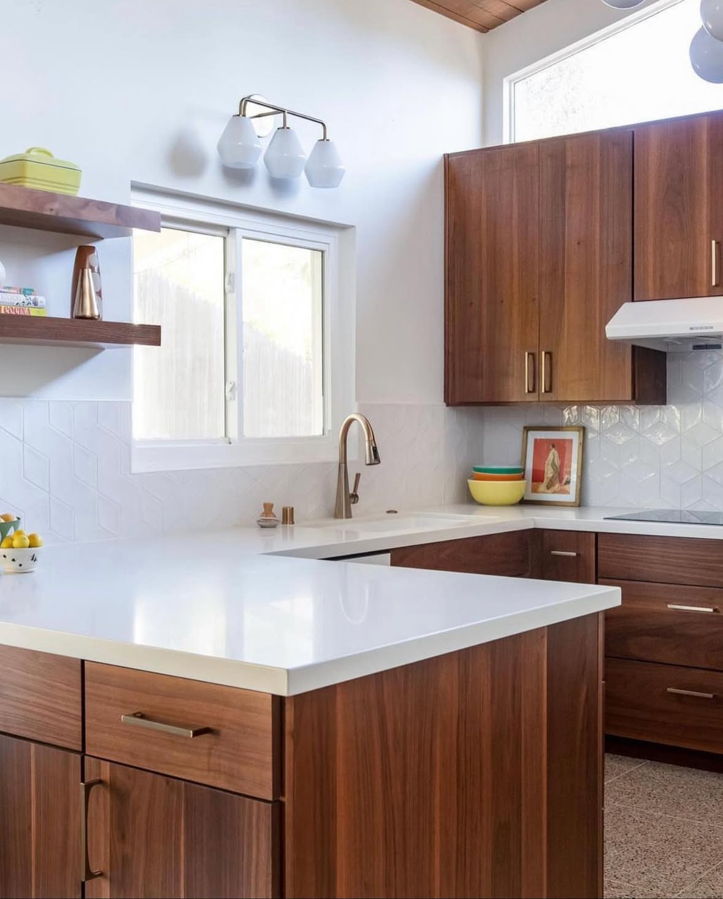

Welcome to Ponce Countertops Inc
✓ Licensed & Insured • Family Owned • Free Estimates
Get a Free EstimatePonce Countertops Inc, A family-owned business, with years of experience, is dedicated to delivering high-quality countertop solutions for kitchens, bathrooms, fireplaces, and outdoor spaces.
With years of hands-on experience, we pride ourselves on precision, craftsmanship, and customer satisfaction. Every project is completed with care, from start to finish.
Established: 2018
Owner: Martin Ponce
Licensed & Insured
License Number: 1059554

Years of Experience
Projects Completed
Customer Satisfaction
Contact us today for a free consultation and estimate.
Contact Us